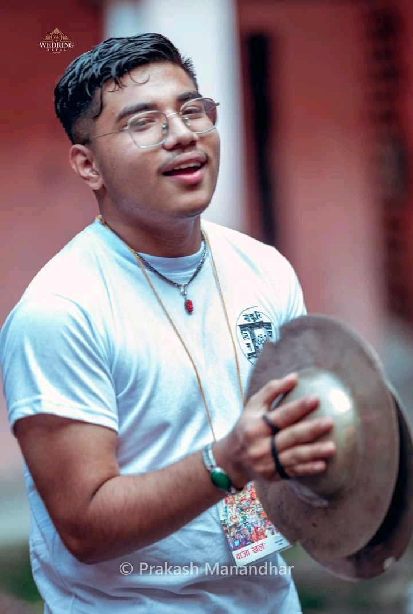

newari instrument dhime
Dhime is a traditional Nepalese percussion instrument used in the music of the Newar community of Nepal. It is a type of cylindrical drum that is played with two sticks, and it is typically made from copper or brass. Dhime is commonly used in religious and folk music, and it is often played as an accompanying instrument to other Newari musical instruments such as the madal and jhyamta. The sound of the dhime is characterized by its deep, resonant tone and fast, intricate rhythms, and it is an important part of Newari musical heritage.
women lead program
A women-led program is a program or initiative designed to support, empower, and promote women as leaders and decision-makers in various fields such as business, technology, politics, education, and more. The goal of these programs is to provide women with the resources, skills, and opportunities they need to succeed and achieve their full potential. This can include training, mentorship, networking opportunities, access to funding and resources, and more